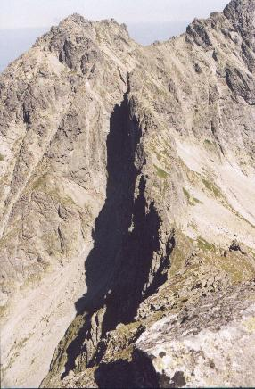
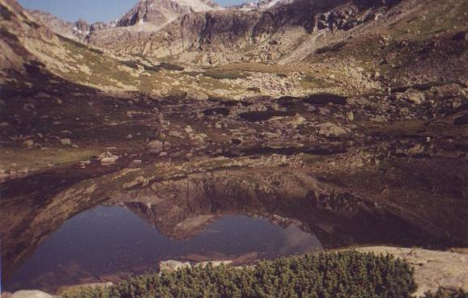
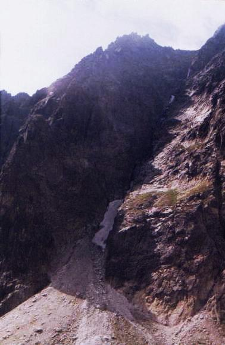

| Tadeusz Bocheński (1895-1962)
Gniazdo
Jest takie gniazdo: bez dna.
Bez wieka.
|
|
| Teresa Harsdorf - Bromowiczowa
(ur. 1912)
Trzy wiersze o człowieku i o skale Nie zachwycać się mdło, po babsku, błękitnie, jaśminowo.
Pętli codziennej więcej nie zacieśniaj.
Wiesz, co to jest śmierć?
|
|||
| Teresa Harsdorf - Bromowiczowa
(ur. 1912)
Metafizyka Na gładkiej ścianie mojego "Nie wiem"
|

Wiarę przerzucę przez przepaść. Cubryna widziana z Koprowego Szczytu fot. Luiza |
| Janina Brzostowska (1907-1986)
Samotnicy Na wysokich szczytach, wokół nas, przejrzystość dali,
Będziemy je nieść z sobą ścieżkami wśród głazów,
[Przez sen kiedyś w lesie pod namiotem
Razem z nami wędrują obłoki,
Wówczas oczy otwieramy śmiało
|
| Aleksander Wojciechowski
(1930-1982)
* * *
Każde
bo
|

Dolina Mlynicy fot. Pacyfka |
| Aleksander Wojciechowski
(1930-1982)
Tu Tu
- tu są
- tu są
|

"Tu są takie miejsca w ścianie które nigdy słońca nie zobaczą..." Żleb we wschodnim stoku Gerlacha fot. Pacyfka |